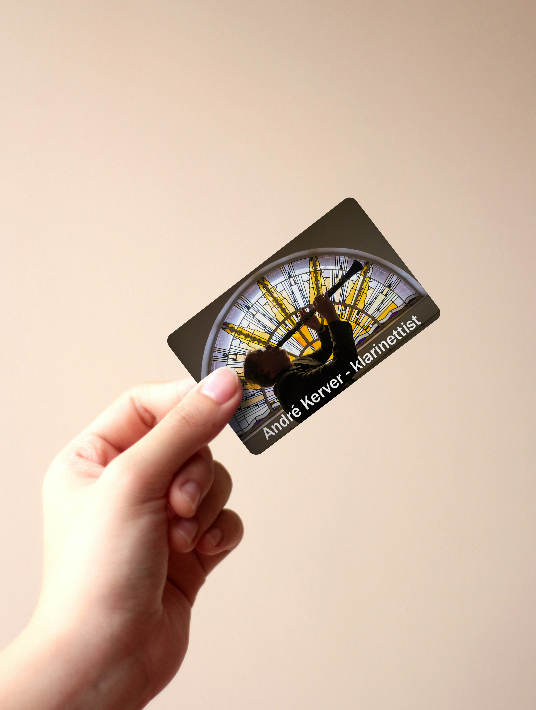
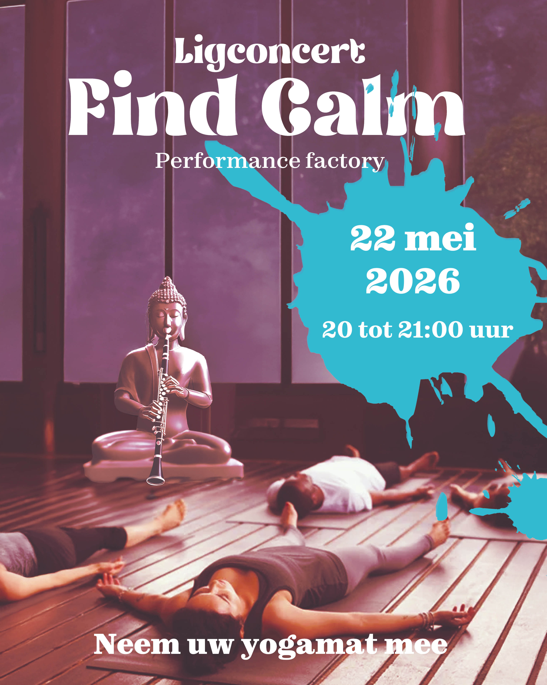
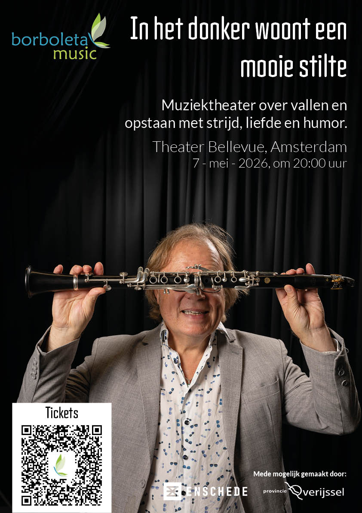
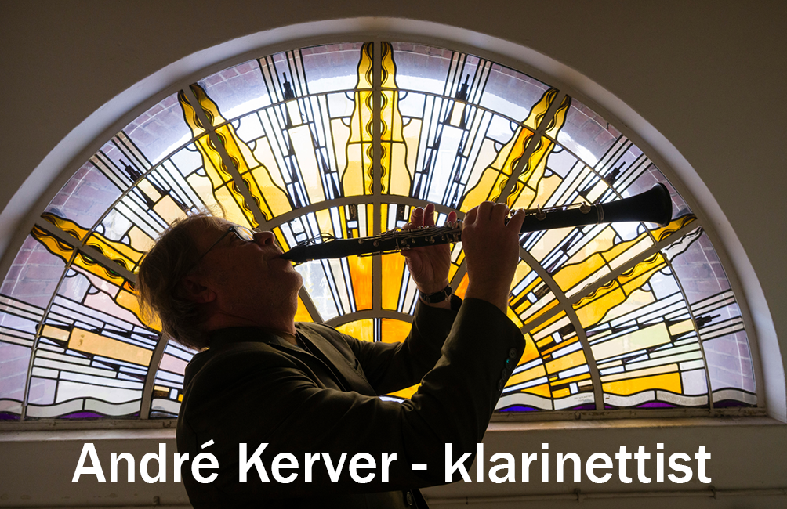
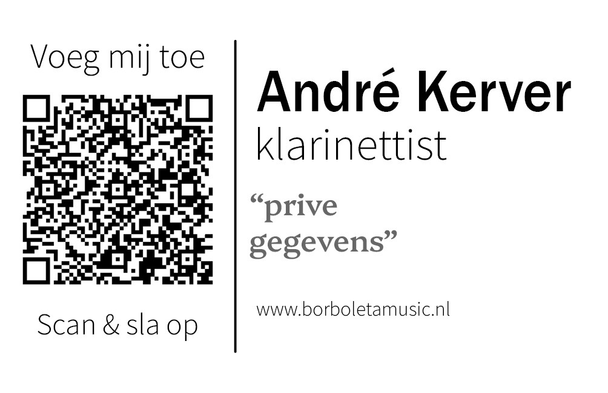
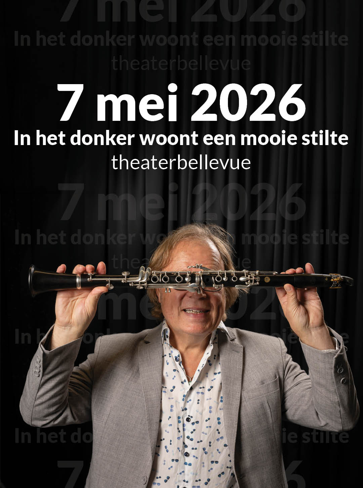
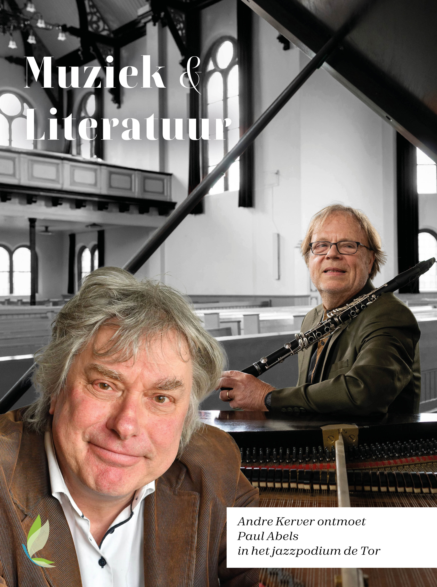
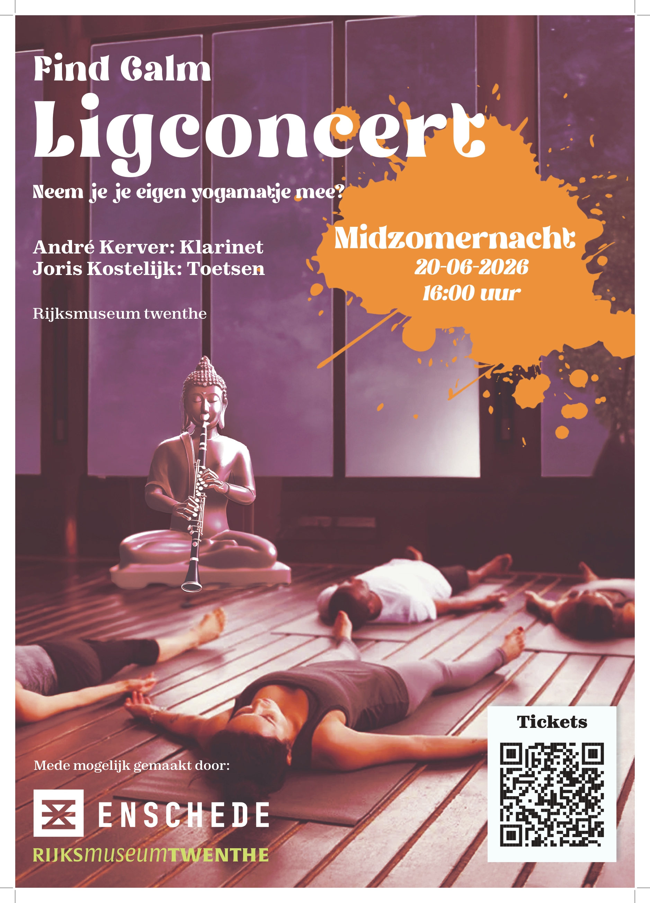
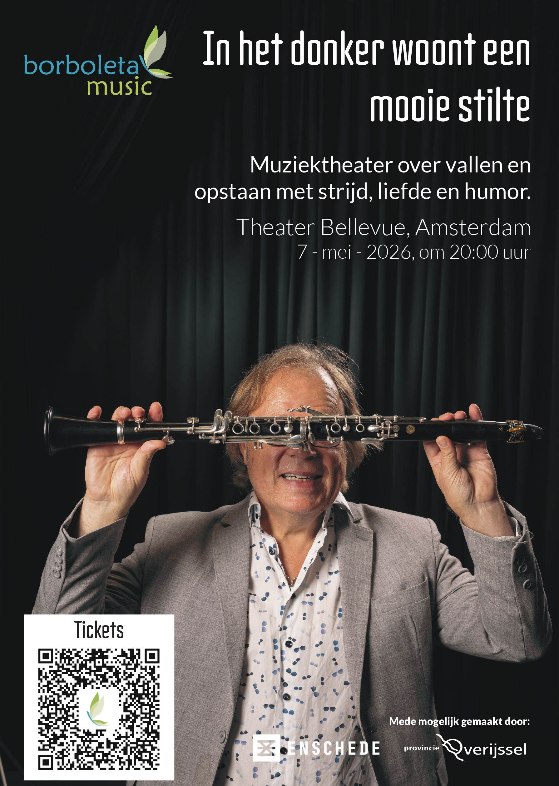
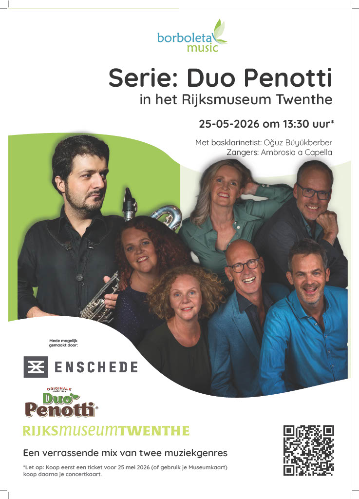

Content creator bij
Borboleta music.
Mijn gemaakte werk van september 2025 tot nu waar ik trots op ben.
Benieuwd naar het proces? Bekijk dan mijn aanpak voordat je verder scrolt.
Bekijk het procesBorboleta Music
Als content creator bij Borboleta Music maak ik grafisch en mixed-media werk: van social-media-content tot promotiemateriaal, opgebouwd over de maanden heen.

Promotie

Sociale media

Posters
Promotie
Los van Borboleta heb ik voor André een eigen visitekaart mogen ontwerpen. Deze opdracht heb ik met veel enthousiasme aangenomen.
Door veel overleg over de uitlijning, tekst en informatie is een mooi eindresultaat ontstaan waar we allebei erg tevreden mee zijn. André deelt de visitekaartjes inmiddels met trots uit als zelfstandig ondernemer.


Sociale media
verschillende uitingen en uitwerkingen
Elke poster heeft een eigen stijl uitwerking met wat unieks erin, dit laat ik graag terugkomen in de sociale media post.
Ik probeer graag de aandacht direct naar de datum en tijd te doen, zodat het direct duidelijk is wanneer en hoelaat. De overige informatie verwerk ik het bericht. hierin komt de datum, tijd en locatie in te staan, maar ook wie er allemaal spelen die dag.


Poster designs
Ontwerpen van september 2025 tot nu.
Voor Borboleta heb ik verschillende huisstijlen mogen bedenken voor de concerten die hij houdt, elk met een bijzondere uitwerking.



Find-calm
Voor dit concert heb ik een rustige huisstijl ontwikkeld. De focus lag op muziek, ontspanning en sfeer.
Het begon met de posters voor de concerten van Find-calm. Op verzoek is een boeddha toegevoegd als teken van rust. Verder wordt duidelijk weergegeven wat er gebeurt: je ligt en luistert naar rustgevende muziek.
Mijn rol:
Content creator - Borboleta Music
In het donker woont een mooie stilte
Voor deze voorstelling heb ik een poster ontworpen gericht op de première in het theater.
Voor de poster IHDWEMS (In het donker woont een mooie stilte) is de aandacht volledig naar André Kerver gebracht. Hij had namelijk een première in de schouwburg van Hengelo.
Later heeft hij op meerdere locaties mogen optreden, waaronder Amsterdam. Hiervoor heb ik het formaat aangepast zodat deze op A0 gedrukt kon worden.
Mijn rol:
Content creator - Borboleta Music
Muziek & literatuur
Vanuit een bestaande social media stijl heb ik een fysieke poster ontwikkeld.
Voor Muziek & literatuur was er voor sociale media al een huisstijl bedacht en uitgewerkt. Alleen hadden we na drie edities nog steeds geen fysieke poster.
Met de bestaande huisstijl heb ik een nieuwe poster ontworpen voor Muziek & literatuur in de Tor.
Mijn rol:
Content creator - Borboleta Music
Duo Penotti
Voor dit concert heb ik een huisstijl ontwikkeld die aansluit bij Borboleta en Duo Penotti.
Blijkbaar kun je gesponsord worden door Duo Penotti wanneer je een concert met deze naam organiseert. Daarom ben ik gaan kijken hoe ik een huisstijl kon maken die aansluit bij de pot van Duo Penotti.
Ik heb verschillende varianten geprobeerd en ben uitgekomen op de kleuren wit en groen. Dit zijn kleuren die Duo Penotti gebruikt, maar ook terugkomen op de website van Borboleta Music .
Door te experimenteren met lagen en de positie van personen ontstaat een unieke uitwerking waarbij alles voldoende aandacht krijgt.
Mijn rol:
Content creator - Borboleta Music
Mixmedia
Ik heb bij verschillende dingen aanwezig mogen zijn, zoals de première van "In het donker woont een mooie stilte", tot het filmen in de Performance Factory. Ook heb ik met aangeleverde materialen promoties gemaakt om meer aandacht te trekken naar de betreffende concerten.
zoek ze op online
Naast mijn gemaakte werk voor hun, onderhouden zij zelf de sociale media ook met de nieuwste updates en aankondigingen.
of bekijk de website: Borboletamusic.nl.